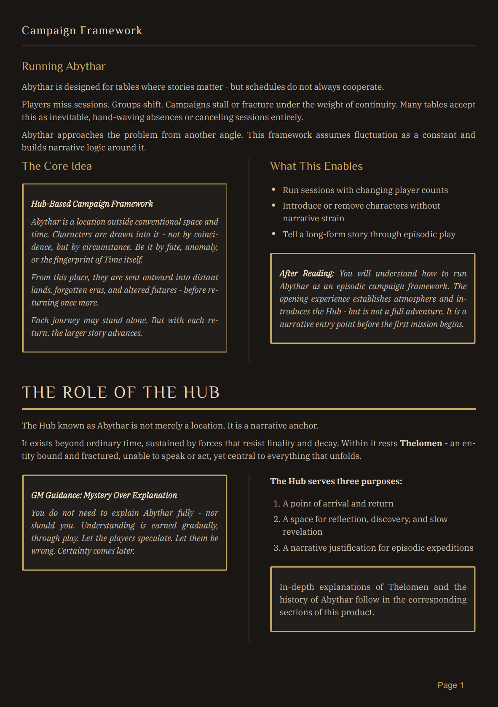
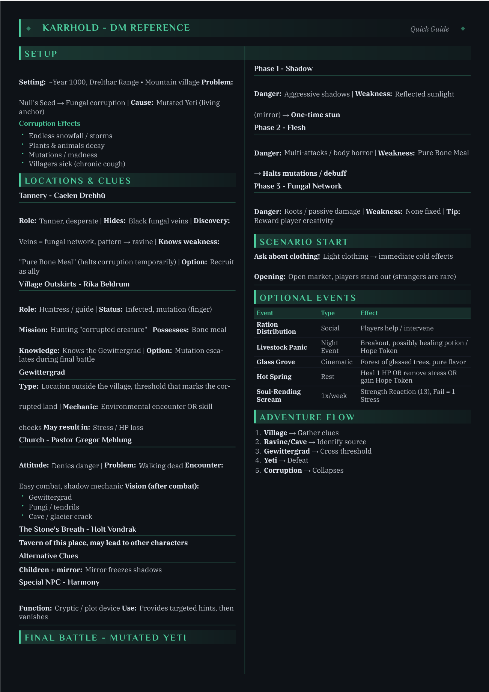

Abythera
A modular Daggerheart campaign framework built around a central hub, an opening mission, and room to add the adventures that suit your group.
Start in Karrhold, then build outward from a hub that changes with the people and choices around it.
- Start with
- Karrhold
- Best for
- Hub-based campaigns
- Recommended arc
- 12+ missions

01 / Inside the framework
A hub that can change with the group.
Harmony is a convergence of lost souls at the heart of the hub. Their conflicting fragments give the group leads to follow and reasons to doubt what they think they know.
Included
Hub framework, NPC guide, mission structure, hub progression, Revelation Path, Opening Experience, and Karrhold.

A strange centre of gravity
There is always something worth following back to the hub.
Harmony is the point where the larger mystery keeps returning to the table: a convergence that can offer leads, contradictions, and new reasons to look closer.
The framework does not prescribe one answer. It gives the group a place for the next question to land.
The actual framework
Read the campaign logic before you commit to it.
This is an interior page from the product itself: the campaign premise, the hub model, and the practical support for a changing group in one working view.
Not a decorative preview. A complete, uncropped page you can inspect at a useful size.

Karrhold is included
The opening mission arrives with a usable reference.
Karrhold is not only a promise in the product description. Its GM reference keeps setup, locations, clues, threats, and the adventure flow in one place at the table.
Included with Abythera: an opening mission built to help a GM run the first session.

At the table
Use the hub to connect standalone adventures into a longer campaign without forcing every group through the same sequence.
A note from Xero
Abythera gives you the framework and its opening mission, Karrhold. Add further missions as your campaign grows.